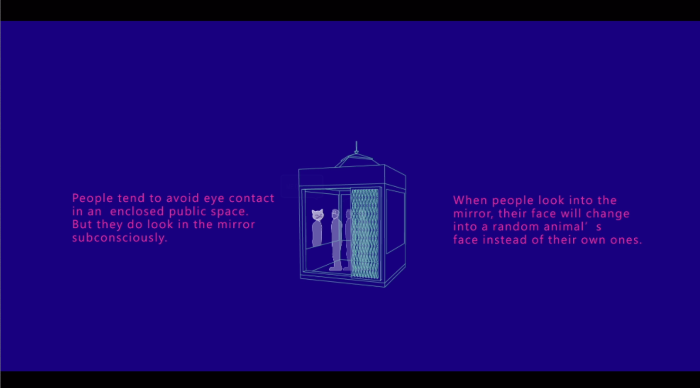

Lynda Lin (Lin Yung-Ta)
TRANIMAL
TRANIMAL
Envison of futuristic elevator interactions.
洪湘婷、張嘉珊、曾唯哲、翁士軒、張馨云、何采穎
TA：林湧達, 高李恩
OpenHCI 2016.
Responsibilty: 帶領團隊
Work of 5-day workshop "openHCI". In 90 years the tools of transportation become more rapid, but the problem of not communicating still exists. By looking into the mirror of the transportation, they trigger the transformation of being a random animal, begin a "communication" and even further exchange afterwards.
openHCI video

Story
Poster

Photo of Demo

Photo of our team